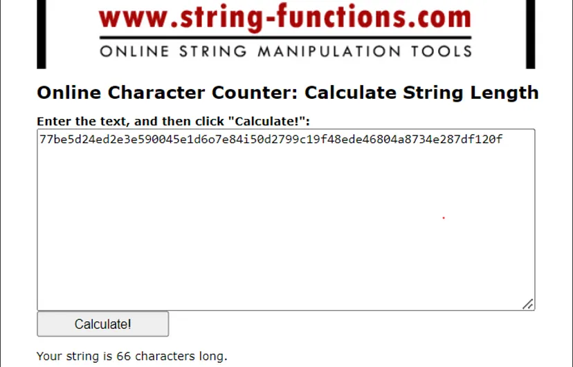
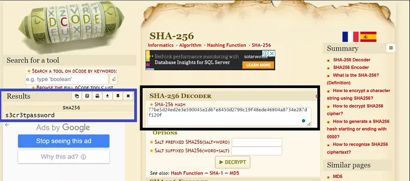
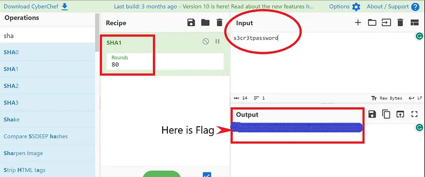

we got this corrupted hash password from a Pcap file with a note (password = sha-1(hash-result)).
HASH:77be5d24ed2e3e590045e1d6o7e84i50d2799c19f48ede46804a8734e287df120f
Link
First I used this website to get the length of Hash and i got that it’s 66 character.

We know that it’s corrupted from description ,so it seems to be maybe 64 characters.
And because it’s (hexadecimal digits) [0:f] ,
by LOOKING at Hash we will notice that there is o and
i which are not Hexa characters So remove them and we got 64x4=256 ,
o YUP it’s (SHA-256).
No, wait don’t celebrate now
Then I used website https://www.dcode.fr/sha256-has to decode SHA-256

we got the plaintext { s3cr3tpassword }
But in challenge he asked us to get Hash to password using “sha-1”
(password = sha-1(hash-result))
So I used CyberChef to get hash to my plaintext and
we got and the flag.

83874343435092cb681c0d558a84bfeb389c32ed